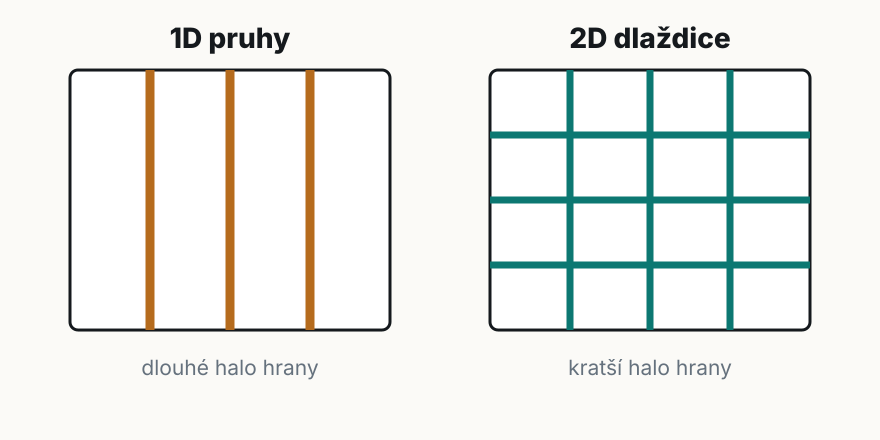
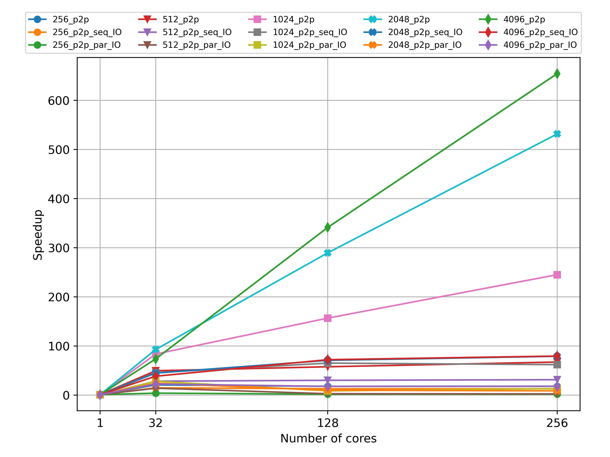
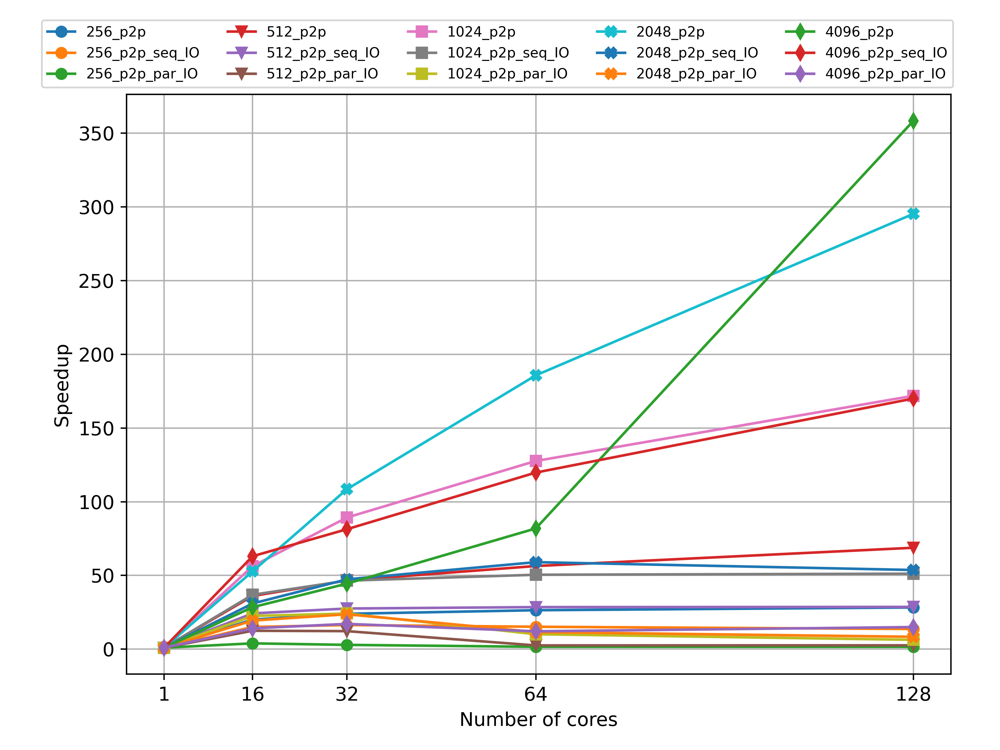
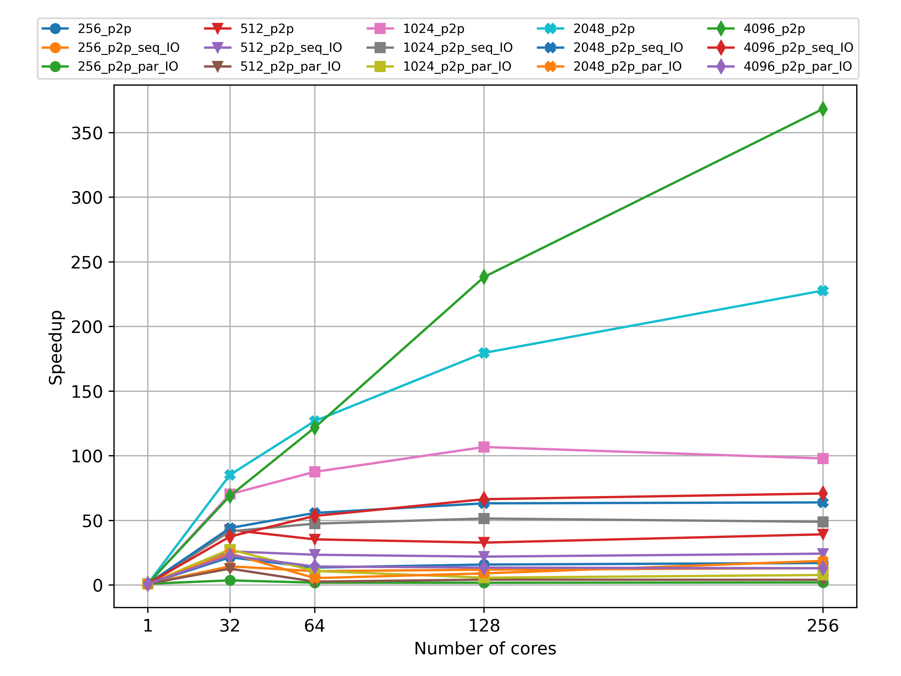
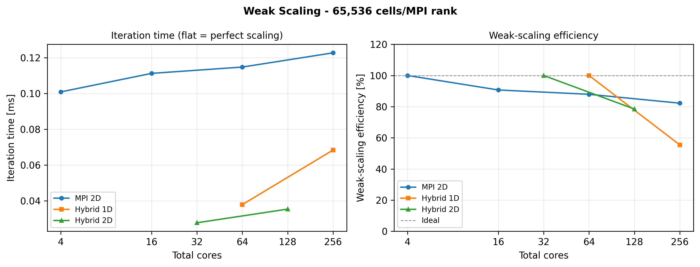
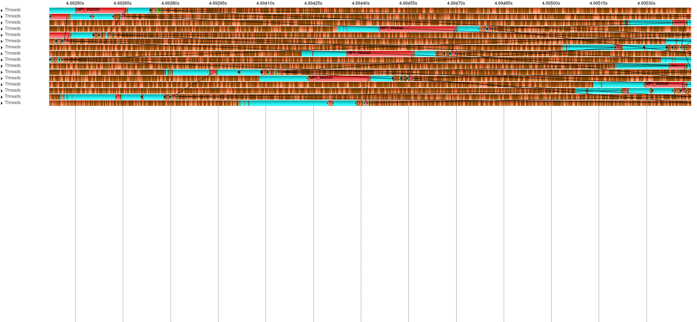
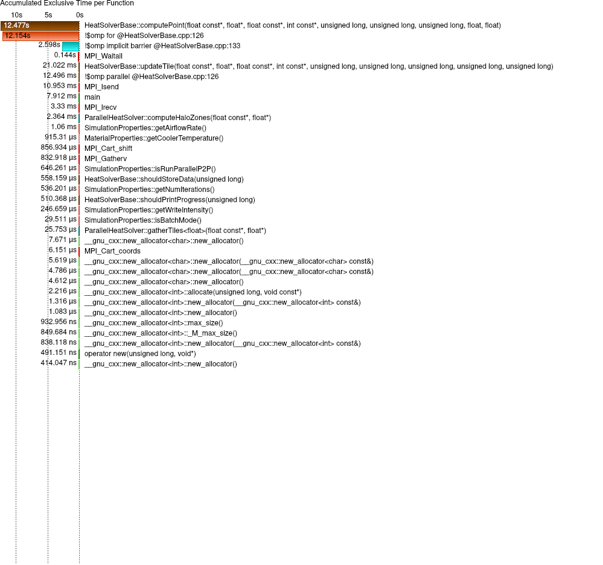
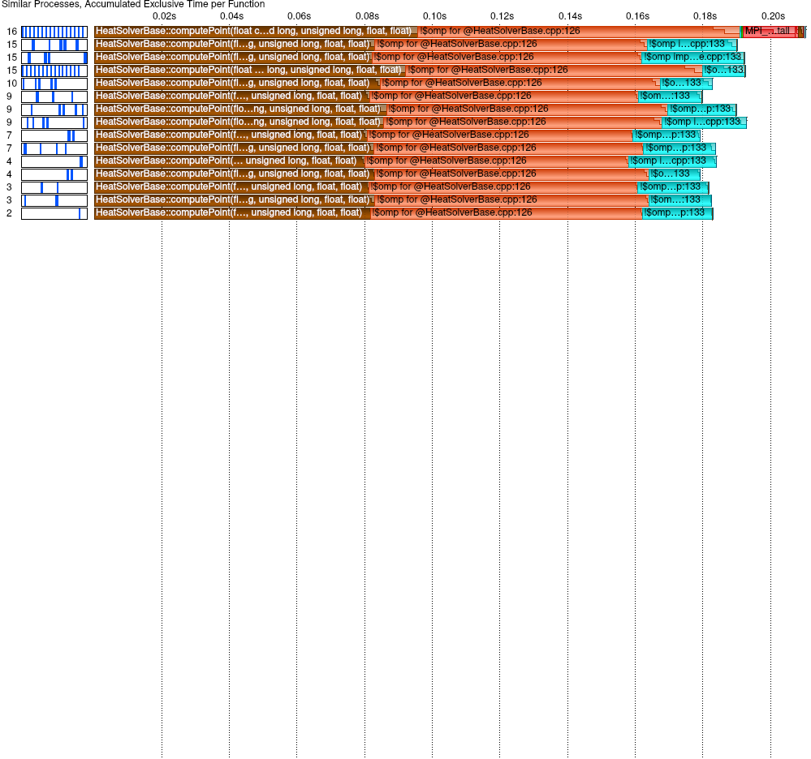
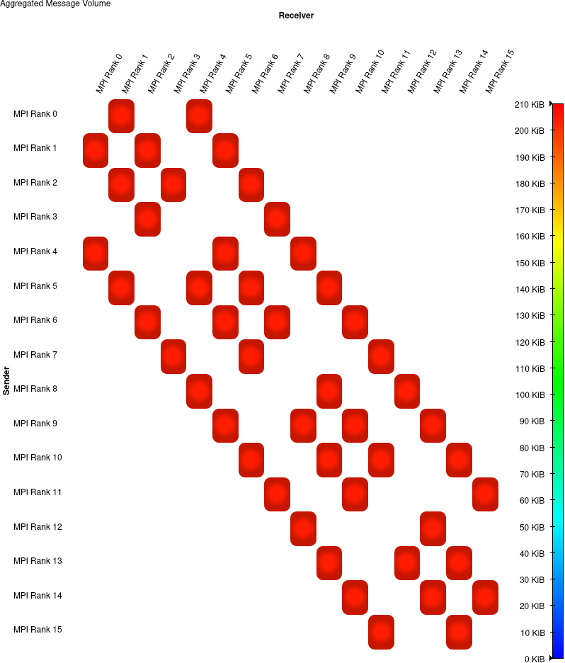
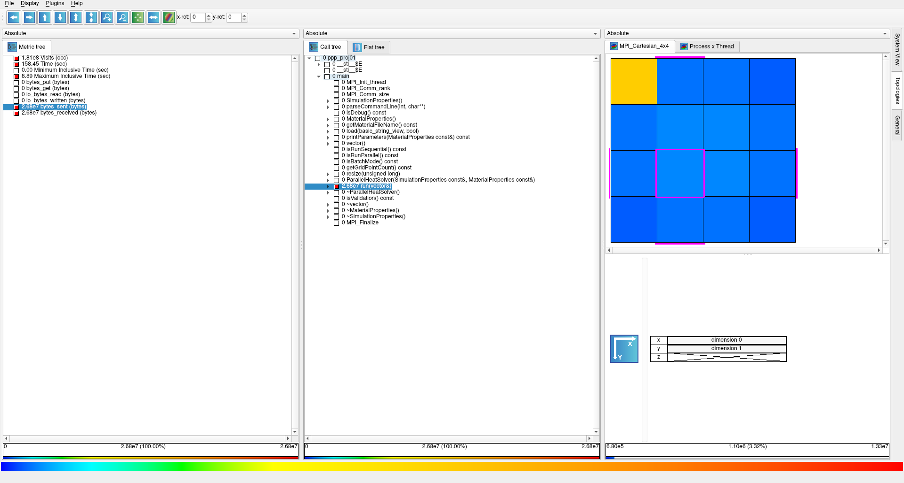

Popis řešení

MPI 1D/2D kartézská dekompozice domény.
OpenMP výpočet bodů uvnitř lokální dlaždice.
Halo P2P neblokující zprávy, RMA přes
MPI_Put, packing a PSCW.
I/O HDF5 výstup s opraveným chunkováním.
Halo exchange se překrývá s výpočtem vnitřku dlaždice.
Silné škálování

Superlineární zrychlení odpovídá cache efektu. Menší dlaždice se vejdou do L3 cache lépe než celá sekvenční doména.
Silné škálování

Čisté MPI potvrzuje přínos 2D dekompozice. Hybridní varianta však dokáže využít více jader přes OpenMP.
Silné škálování

1D dekompozice posílá delší hrany. V reportu vychází přibližně 1,6× slabší než Hybrid 2D.
Slabé škálování

RMA optimalizace
MPI_Get
derived datatype
MPI_Win_fence
MPI_Put
souvislý buffer
PSCW sousedé
Izolované měření oddělilo směr RMA operace, layout dat i synchronizaci.
Izolované měření RMA
MPI_Get na MPI_Put.
| Faktor | Změna | Zrychlení | Interpretace |
|---|---|---|---|
| Směr RMA | MPI_Get → MPI_Put |
55-80× | dominantní problém původní varianty |
| Layout dat | strided halo → packed buffer | 1,5-3× | méně režie v MPI datových typech |
| Synchronizace | MPI_Win_fence → PSCW |
1,15-1,74× | synchronizují se jen sousedé |
| Celkem | naive RMA → finální RMA | 133-268× | kombinovaný efekt všech změn |
Vampir časová osa

Timeline ukazuje poměr výpočtu a MPI částí v jedné iteraci. Čekání na halo je vidět na konci iterací.
Vampir Function Summary

Function Summary potvrzuje, že největší část času patří výpočtu bodů. MPI části jsou hlavně synchronizace halo výměny.
Vampir Process Summary

Procesy mají podobný čas ve výpočtu i v MPI, protože dlaždice mají stejnou velikost a stencil má pevnou cenu na bod.
Vampir komunikace

U 1D byl odpovídající maximální agregovaný objem 840 KiB. 2D komunikuje s více sousedy, ale kratšími hranami.
Cube topologie

Ve 2D výstupu vyniká rank 0 kvůli scatter/gather. Ostatních 15 ranků má téměř shodný objem halo komunikace.
Zdůvodnění výsledků
dekompozice
\( \frac{V_{\mathrm{1D}}}{V_{\mathrm{2D}}} = \frac{\sqrt{P}}{2} \)
2D snižuje objem halo dat při větším počtu procesů.
Cache efekt sekvenční \(4096^2\) doména se nevejde do L3 cache, rozdělené dlaždice ano.
Důsledek nejlepší běh je superlineární vůči 256 jádrům.
I/O oprava HDF5 chunkování výrazně zlepšila původní paralelní zápis.
Limit pro malé snapshoty 4-64 MB může stále dominovat režie Lustre koordinace.
nebalit halo, které je už souvislé v paměti
prověřit méně časté a větší kolektivní zápisy
Implementace škáluje, profilování odpovídá očekávání a hlavní přínos je v měřitelném rozkladu komunikační režie.